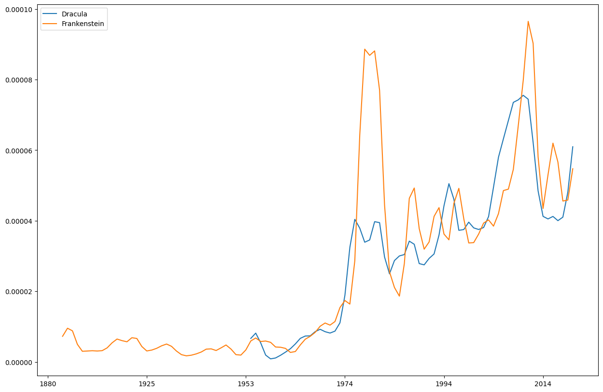

dhlab class demo#
import dhlab as dh
---------------------------------------------------------------------------
ModuleNotFoundError Traceback (most recent call last)
Cell In[1], line 1
----> 1 import dhlab as dh
ModuleNotFoundError: No module named 'dhlab'
Corpus#
dh.Corpus??
Init signature:
dh.Corpus(
doctype=None,
author=None,
freetext=None,
fulltext=None,
from_year=None,
to_year=None,
from_timestamp=None,
to_timestamp=None,
title=None,
ddk=None,
subject=None,
lang=None,
limit=10,
order_by='random',
)
Source:
class Corpus(DhlabObj):
"""Class representing as DHLAB Corpus
Primary object for working with dhlab data. Contains references to texts
in National Library's collections and metadata about them.
Use with `.coll`, `.conc` or `.freq` to analyse using dhlab tools.
"""
def __init__(
self,
doctype=None,
author=None,
freetext=None,
fulltext=None,
from_year=None,
to_year=None,
from_timestamp=None,
to_timestamp=None,
title=None,
ddk=None,
subject=None,
lang=None,
limit=10,
order_by="random"
):
if (doctype
or author
or freetext
or fulltext
or from_year
or to_year
or from_timestamp
or to_timestamp
or title
or ddk
or lang):
"""Create Corpus
:param str doctype: ``"digibok"``, ``"digavis"``, \
``"digitidsskrift"`` or ``"digistorting"``
:param str author: Name of an author.
:param str freetext: any of the parameters, for example:\
``"digibok AND Ibsen"``.
:param str fulltext: words within the publication.
:param int from_year: Start year for time period of interest.
:param int to_year: End year for time period of interest.
:param int from_timestamp: Start date for time period of interest.
Format: ``YYYYMMDD``, books have ``YYYY0101``
:param int to_timestamp: End date for time period of interest.
Format: ``YYYYMMDD``, books have ``YYYY0101``
:param str title: Name or title of a document.
:param str ddk: `Dewey Decimal Classification \
<https://no.wikipedia.org/wiki/Deweys_desimalklassifikasjon>`\
_ identifier.
:param str subject: subject (keywords) of the publication.
:param str lang: Language of the publication, as a 3-letter ISO code.
Example: ``"nob"`` or ``"nno"``
:param int limit: number of items to sample.
"""
self.corpus = document_corpus(
doctype,
author,
freetext,
fulltext,
from_year,
to_year,
from_timestamp,
to_timestamp,
title,
ddk,
subject,
lang,
limit,
order_by
)
else:
self.corpus = pd.DataFrame(columns=["urn"])
super().__init__(self.corpus)
self.size = len(self.corpus)
@classmethod
def from_identifiers(cls, identifiers):
"""Construct Corpus from list of identifiers"""
corpus = Corpus()
corpus.extend_from_identifiers(identifiers=identifiers)
return corpus
@classmethod
def from_df(cls, df, check_for_urn=False):
"""Typecast Pandas DataFrame to Corpus class
DataFrame most contain URN column"""
corpus = Corpus()
if check_for_urn:
corpus.corpus = cls._urn_id_in_dataframe_cols(df)
else:
corpus.corpus = df
corpus.frame = corpus.corpus
corpus.size = len(corpus.corpus)
return corpus
@classmethod
def from_csv(cls, path):
"""Import corpus from csv"""
df = pd.read_csv(path)
return cls.from_df(df)
@staticmethod
def _urn_id_in_dataframe_cols(dataframe):
"""Checks if dataframe contains URN column"""
if "urn" in dataframe.columns:
if dataframe.urn.str.contains("^URN:NBN:no-nb_.+").all():
return dataframe
raise ValueError("No'urn'-column in dataframe.")
def extend_from_identifiers(self, identifiers=None):
new_corpus = get_metadata(urnlist(identifiers))
self.add(new_corpus)
def evaluate_words(self, wordbags = None):
df = evaluate_documents(wordbags = wordbags, urns = list(self.corpus.urn))
df.index = df.index.astype(int)
cols = df.columns
df = pd.concat([df, self.corpus[['dhlabid','urn']].set_index('dhlabid')], axis = 1)
df = df.set_index('urn')
return df[cols].fillna(0)
def add(self, new_corpus):
"""Utility for appending Corpus or DataFrame to self"""
if self._is_Corpus(new_corpus):
new_corpus = new_corpus.frame
self.frame = pd.concat([self.frame, new_corpus]).drop_duplicates().reset_index(drop=True)
self.corpus = self.frame
self.size = len(self.frame)
def sample(self, n=5):
"Create random subkorpus with `n` entries"
n = min(n, self.size)
sample = self.corpus.sample(n).copy()
return self.from_df(sample)
def conc(self, words, window=20, limit=500):
"Get concodances of `words` in corpus"
return dh.Concordance(corpus=self.frame, query=words, window=window, limit=limit)
def coll(
self,
words=None,
before=10,
after=10,
reference=None,
samplesize=20000,
alpha=False,
ignore_caps=False):
"Get collocations of `words` in corpus"
return dh.Collocations(
corpus=self.frame,
words=words,
before=before,
after=after,
reference=reference,
samplesize=samplesize,
alpha=alpha,
ignore_caps=ignore_caps
)
def count(self, words=None):
"Get word frequencies for corpus"
return dh.Counts(self, words)
def freq(self, words=None):
"Get word frequencies for corpus"
return dh.Counts(self, words)
@staticmethod
def _is_Corpus(corpus) -> bool:
"""Check if `input` is Corpus or DataFrame"""
if type(corpus) not in [DataFrame, Corpus]:
raise TypeError("Input is not Corpus or DataFrame")
return isinstance(corpus, Corpus)
File: ~/anaconda3/envs/digital_tekstanalyse3.10/lib/python3.10/site-packages/dhlab/text/corpus.py
Type: type
Subclasses:
Init signature:
dh.Corpus(
doctype=None,
author=None,
freetext=None,
fulltext=None,
from_year=None,
to_year=None,
from_timestamp=None,
to_timestamp=None,
title=None,
ddk=None,
subject=None,
lang=None,
limit=10,
order_by='random',
)
korpus = dh.Corpus(doctype="digibok", title="Dracula")
korpus.frame.iloc[:5, [0,1,2,3,9]]
| dhlabid | urn | title | authors | year | |
|---|---|---|---|---|---|
| 0 | 100439375 | URN:NBN:no-nb_digibok_2021042058016 | Dracula : av Lars Saabye Christensen : fritt e... | 2000 | |
| 1 | 100346414 | URN:NBN:no-nb_digibok_2017091805047 | Dracula | MacDonald , Eric / Stoker , Bram | 1983 |
| 2 | 100547952 | URN:NBN:no-nb_digibok_2011071108102 | Dracula | Stoker , Bram / Carling , Bjørn | 2006 |
| 3 | 100138345 | URN:NBN:no-nb_digibok_2013013008275 | Dracula house | Flikke , Nina | 1986 |
| 4 | 100138409 | URN:NBN:no-nb_digibok_2013013108024 | Dracula | Stoker , Bram / Bringsværd , Tor Åge / Bing , ... | 1974 |
Conkordans#
dh.Concordance??
Init signature: dh.Concordance(corpus=None, query=None, window=20, limit=500)
Source:
class Concordance(DhlabObj):
"""Wrapper for concordance function"""
def __init__(self, corpus=None, query=None, window=20, limit=500):
"""Get concordances for word(s) in corpus
:param corpus: Target corpus, defaults to None
:param query: word or list or words, defaults to None
:param window: how many tokens to consider around the target word, \
defaults to 20
:param limit: limit returned hits, defaults to 500
"""
self.concordance = concordance(
urns=urnlist(corpus), words=query, window=window, limit=limit
)
self.concordance["link"] = self.concordance.urn.apply(make_link)
self.concordance = self.concordance[["link", "urn", "conc"]]
self.concordance.columns = ["link", "urn", "concordance"]
self.corpus = corpus
self.size = len(self.concordance)
super().__init__(self.concordance)
def show(self, n=10, style=True):
if style:
result = self.concordance.sample(min(n, self.size))[
["link", "concordance"]
].style
else:
result = self.concordance.sample(min(n, self.size))
return result
File: ~/anaconda3/envs/digital_tekstanalyse3.10/lib/python3.10/site-packages/dhlab/text/conc_coll.py
Type: type
Subclasses:
dh.Concordance(corpus=None, query=None, window=20, limit=500)
korpus.conc("Dracula").show()
| link | concordance | |
|---|---|---|
| 233 | URN:NBN:no-nb_digibok_2014052008098 | DRACULA |
| 530 | URN:NBN:no-nb_digibok_2011071108102 | DRACULA |
| 300 | URN:NBN:no-nb_digibok_2014052008098 | DRACULA I |
| 607 | URN:NBN:no-nb_digibok_2011071108102 | DRACULA |
| 379 | URN:NBN:no-nb_digibok_2014052008098 | DRACULA ! |
| 589 | URN:NBN:no-nb_digibok_2011071108102 | DRACULA |
| 491 | URN:NBN:no-nb_digibok_2011071108102 | DRACULA |
| 42 | URN:NBN:no-nb_digibok_2010020103031 | K Dracula ... ; |
| 84 | URN:NBN:no-nb_digibok_2017091805047 | Dracula ( opphisset ) : |
| 610 | URN:NBN:no-nb_digibok_2011071108102 | dracula ! |
Frekvens#
dh.Counts??
Init signature: dh.Counts(corpus=None, words=None)
Source:
class Counts(DhlabObj):
"""Provide counts for a corpus - shouldn't be too large"""
def __init__(self, corpus=None, words=None):
"""Get frequency list for Corpus
:param corpus: target Corpus, defaults to None
:param words: list of words to be counted, defaults to None
"""
if corpus is None and words is None:
self.counts = pd.DataFrame()
self.title_dct = None
elif corpus is not None:
# count - if words is none result will be as if counting all words
# in the corpus
self.counts = get_document_frequencies(
urns=urnlist(corpus), cutoff=0, words=words
)
# Include dhlab and title link in object
self.title_dct = {k : v for k, v in zip(corpus.frame.dhlabid, corpus.frame.title)}
super().__init__(self.counts)
def sum(self):
"""Summarize Corpus frequencies
:return: frequency list for Corpus
"""
#c = Counts()
#c.counts = self.counts.sum(axis=1)
return self.from_df(self.counts.sum(axis=1).to_frame("freqs"))
def display_names(self):
"Display data with record names as column titles."
return self.frame.rename(self.title_dct, axis=1)
@classmethod
def from_df(cls, df):
obj = Counts()
obj.counts = df
obj.frame = df
return obj
File: ~/anaconda3/envs/digital_tekstanalyse3.10/lib/python3.10/site-packages/dhlab/text/conc_coll.py
Type: type
Subclasses:
dh.Counts(corpus=None, words=None)
korpus.count().display_names()
| Dracula | Dracula : fritt etter Bram Stokers roman | Bram Stoker's Dracula | Dracula | Dracula house | Dracula | Dracula | Dracula | |
|---|---|---|---|---|---|---|---|---|
| . | 646.0 | 3268.0 | 578.0 | 8495.0 | 287.0 | 8447.0 | 8162.0 | 832.0 |
| , | 500.0 | 1384.0 | 368.0 | 9133.0 | 140.0 | 9659.0 | 9611.0 | 678.0 |
| og | 288.0 | 524.0 | 147.0 | 6206.0 | 151.0 | 6350.0 | 6312.0 | 261.0 |
| i | 265.0 | 449.0 | 250.0 | 2137.0 | 129.0 | 3092.0 | 2509.0 | 187.0 |
| ^ | 154.0 | 0.0 | 189.0 | 0.0 | 1.0 | 2.0 | 0.0 | 1.0 |
| ... | ... | ... | ... | ... | ... | ... | ... | ... |
| forts. | 0.0 | 0.0 | 0.0 | 0.0 | 0.0 | 0.0 | 0.0 | 10.0 |
| Nu | 0.0 | 0.0 | 0.0 | 0.0 | 0.0 | 0.0 | 0.0 | 13.0 |
| Pause | 0.0 | 0.0 | 0.0 | 0.0 | 0.0 | 0.0 | 0.0 | 13.0 |
| Ton | 0.0 | 0.0 | 0.0 | 0.0 | 0.0 | 0.0 | 0.0 | 17.0 |
| onathan | 0.0 | 0.0 | 0.0 | 0.0 | 0.0 | 0.0 | 0.0 | 25.0 |
22202 rows × 8 columns
#
from dhlab import totals
tot = totals()
tot.freq
. 7655423257
, 5052171514
i 2531262027
og 2520268056
- 1314451583
...
tidspunkter 110667
dirigenter 110660
ondartet 110652
kulturtilbud 110652
trassig 110651
Name: freq, Length: 50000, dtype: int64
(korpus.coll("Dracula").frame.counts / tot.freq).sort_values(ascending=False).to_frame().head(10)
| 0 | |
|---|---|
| Dracula | 0.000325 |
| grev | 0.000093 |
| Jonathan | 0.000044 |
| Grev | 0.000042 |
| tyrkerne | 0.000037 |
| uverdige | 0.000026 |
| Depotbiblioteket | 0.000025 |
| vedlagte | 0.000024 |
| hungersnød | 0.000024 |
| Helsing | 0.000020 |
Ngram#
??dh.Ngram
Init signature:
dh.Ngram(
words=None,
from_year=None,
to_year=None,
doctype='bok',
mode='relative',
lang='nob',
**kwargs,
)
Source:
class Ngram(DhlabObj):
"""Top level class for ngrams"""
def __init__(self,
words=None,
from_year=None,
to_year=None,
doctype='bok',
mode='relative',
lang="nob",
**kwargs
):
"""Ngram builder class.
Build Ngrams from the National Librarys collections.
Use with book corpus or newspaper corpus.
Lang parameter is only supported for book (`bok`) corpus.
Defaults to `None` if doctype is `avis`.
:param words: words to examine, defaults to None
:type words: str or list of str, optional
:param from_year: lower period cutoff, defaults to None
:type from_year: int, optional
:param to_year: upper period cutoff, defaults to None
:type to_year: int, optional
:param doctype: `bok` or `avis` , defaults to 'bok'
:type doctype: str, optional
:param mode: Frequency measure, defaults to 'relative'
:type mode: str, optional
:param lang: `nob`, `nno`. Only use with docytype='bok', defaults to 'nob'
:type lang: str, optional
:param \**kwargs: Keyword arguments for Ngram._ipython_display_() Ngram.plot()
"""
self.date = datetime.now()
if to_year is None:
to_year = self.date.year
if from_year is None:
from_year = 1950
self.from_year = from_year
self.to_year = to_year
self.words = words
self.lang = lang
if doctype is not None:
if 'bok' in doctype:
doctype = 'bok'
elif 'avis' in doctype:
doctype = 'avis'
else:
doctype = 'bok'
else:
doctype = 'bok'
# Set default lang for 'bok'-corpus
if doctype == "avis":
lang = None
ngrm = nb_ngram(terms=', '.join(words),
corpus=doctype,
years=(from_year, to_year),
smooth = 1, lang = lang,
mode=mode)
ngrm.index = ngrm.index.astype(str)
self.ngram = ngrm
self.kwargs = kwargs
super().__init__(self.ngram)
def plot(self, smooth = 4, **kwargs):
""":param smooth: smoothing the curve"""
grf = self.ngram.rolling(window=smooth, win_type='triang').mean()
grf.plot(**kwargs)
def compare(self, another_ngram):
"""Divide one ngram by another - measures difference"""
start_year = max(datetime(self.from_year, 1, 1),
datetime(another_ngram.from_year, 1, 1)).year
end_year = min(datetime(self.to_year, 1, 1), datetime(another_ngram.to_year, 1, 1)).year
transposed_ngram = self.ngram.loc[str(start_year):str(end_year)].transpose()
sum_other_ngram = another_ngram.ngram[str(start_year):str(end_year)].transpose().sum()
compare = (transposed_ngram / sum_other_ngram).transpose()
return compare
def _ipython_display_(self):
self.plot(**self.kwargs)
File: ~/anaconda3/envs/digital_tekstanalyse3.10/lib/python3.10/site-packages/dhlab/ngram/ngram.py
Type: type
Subclasses: NgramBook, NgramNews
dh.Ngram(
words=None,
from_year=None,
to_year=None,
doctype='bok',
mode='relative',
lang='nob',
**kwargs,
)
dh.Ngram(["Dracula", "Frankenstein"], from_year=1880, to_year=2020)
